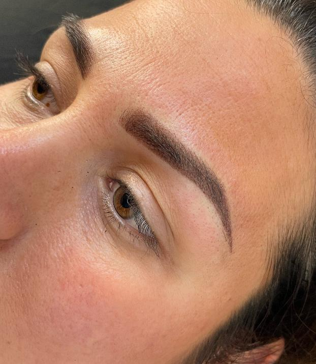
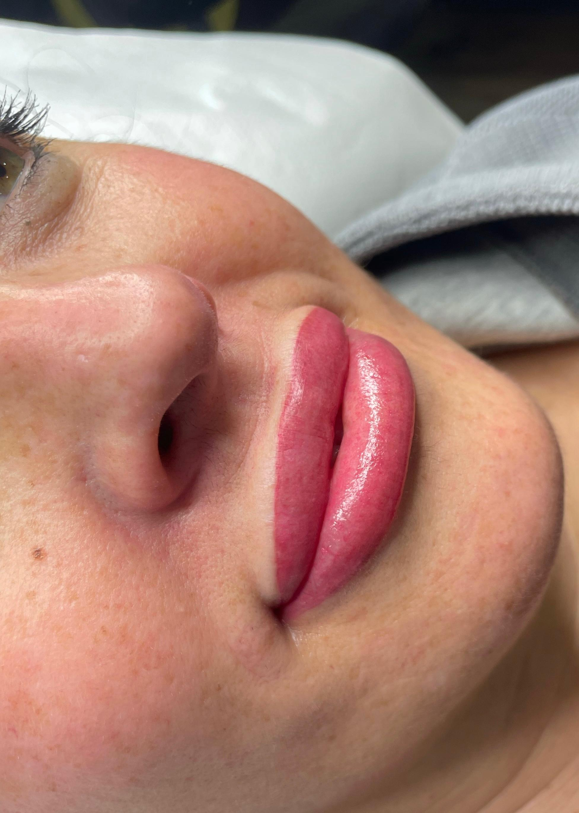
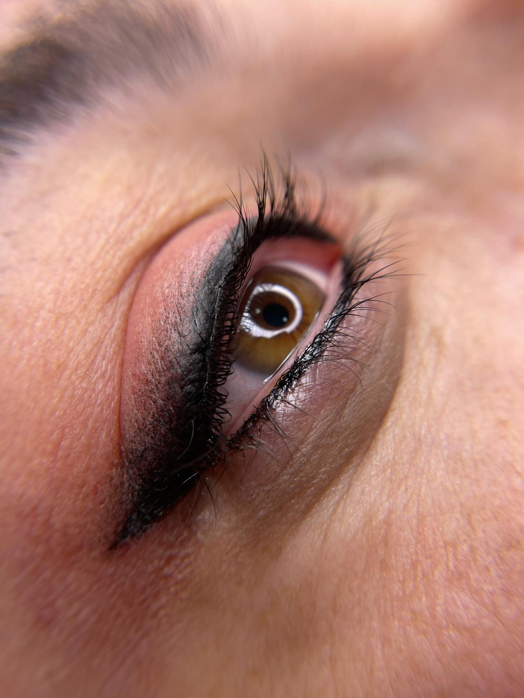
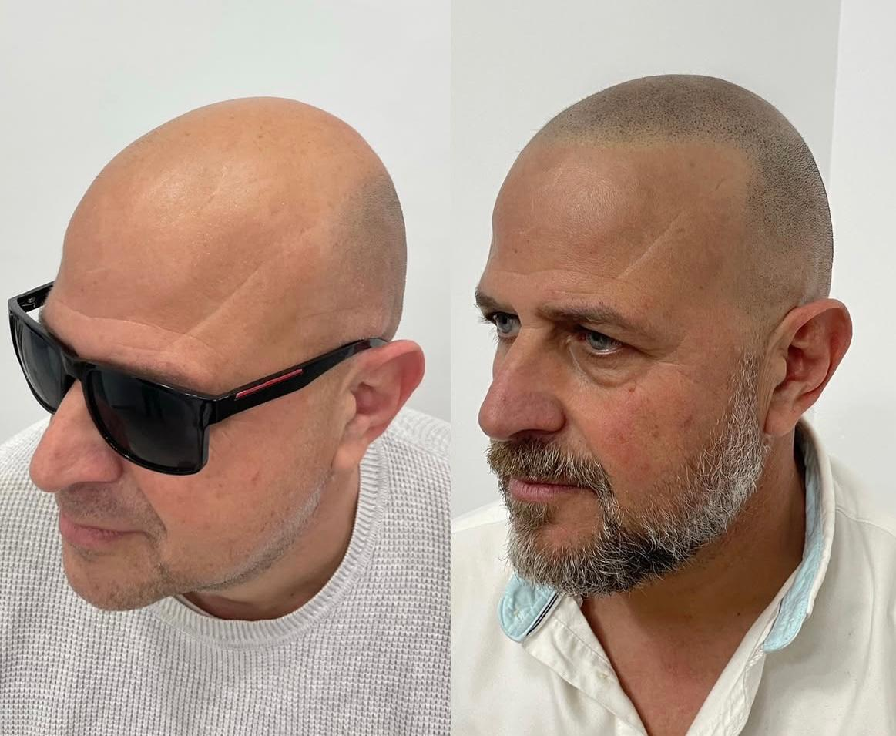
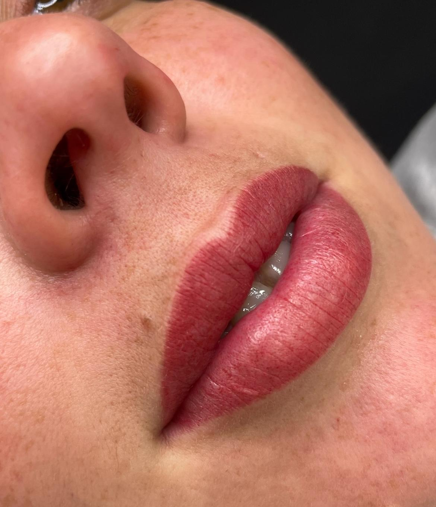
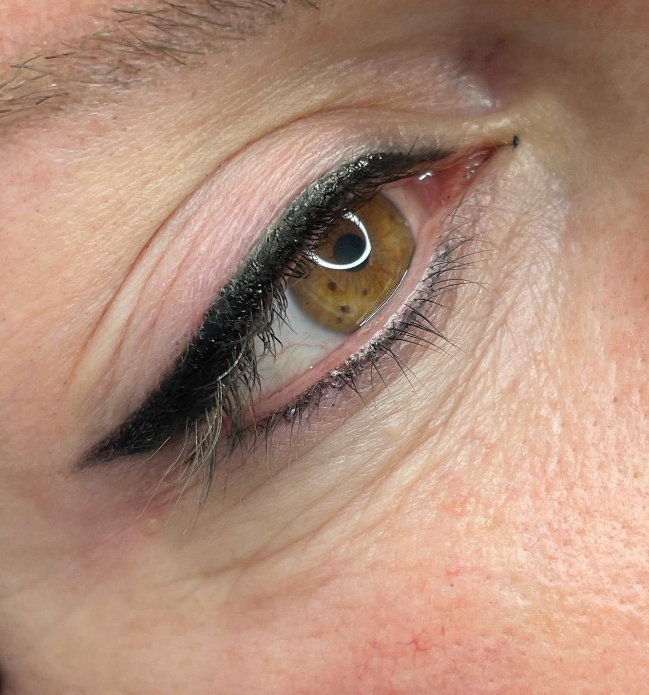
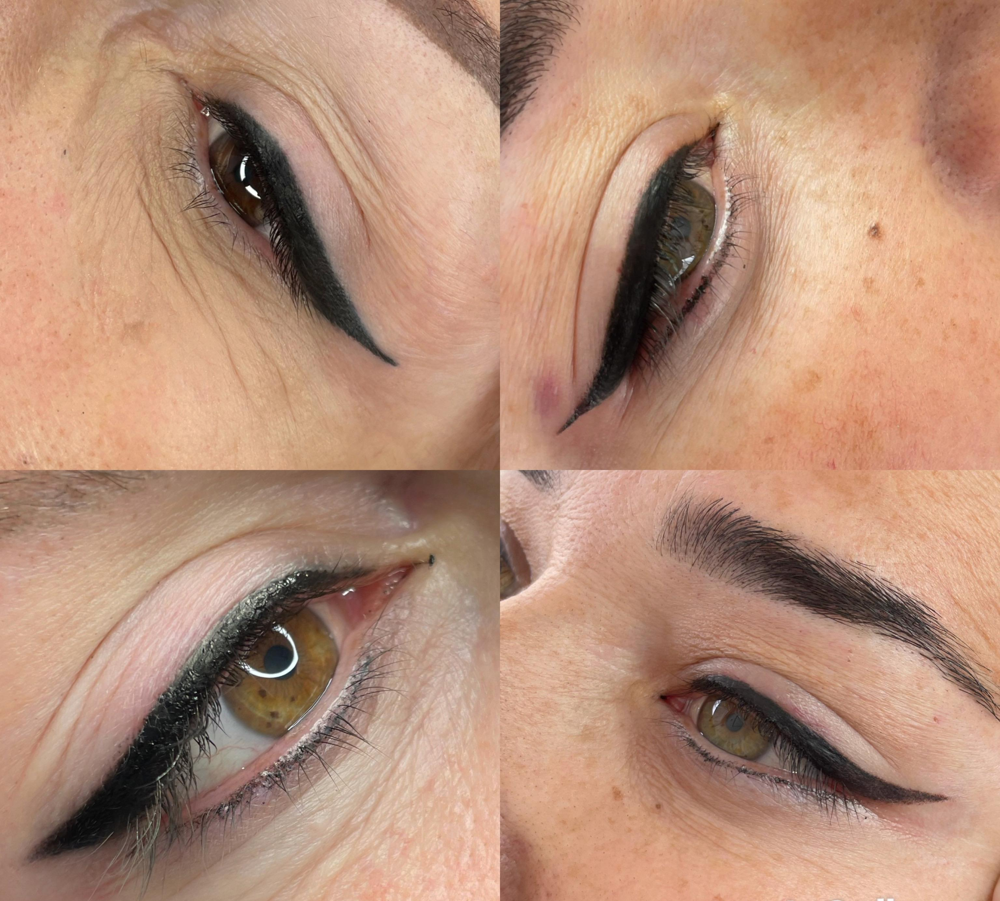
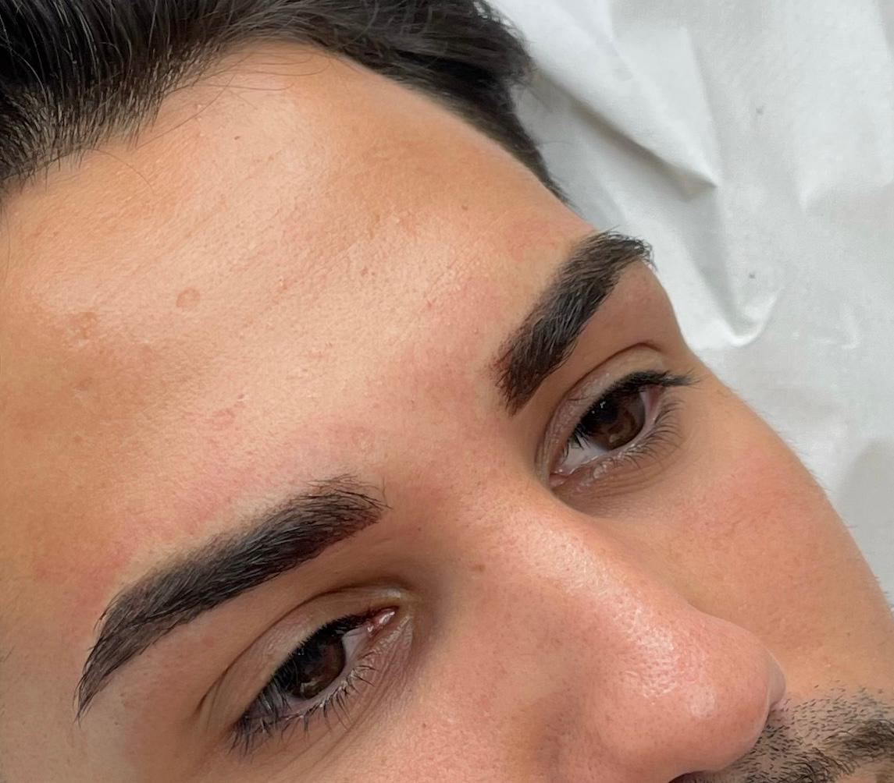

Realza tu belleza natural con técnicas profesionales: cejas, labios, ojos y micropigmentación capilar (SMP)
Descubre Nuestros Servicios







En Manuela Rios Micropigmentación somos especialistas en resaltar tu belleza natural mediante técnicas avanzadas. Nuestro objetivo es ofrecerte resultados que realcen tu confianza y personalidad única.
Trabajamos con productos certificados y las técnicas más actuales: microblading y efecto polvo para cejas; aquarela lips y full lips para labios; delineados degradado y clásico para ojos; y micropigmentación capilar (SMP).
Cada tratamiento es personalizado tras una consulta donde analizamos tu piel, rasgos y preferencias para diseñar el resultado ideal.
Diseño y definición natural con microblading, efecto polvo o técnica híbrida.
Efecto aquarella lips (labio con mayor naturalidad) y full lips (efecto más marcado y estructurado).
Infralash (entre pestañas), eyeliner degradado o clásico para una mirada definida.
3 opciones distintas
Efecto rapado, efecto densidad y camuflaje de cicatrices